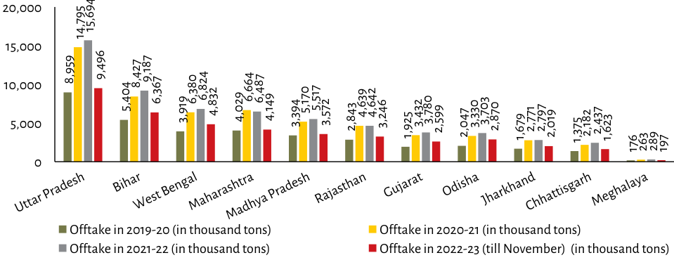

| State | Offtake 2019-20 (in thousand tons) | Offtake 2020-21 (in thousand tons) | Offtake in 2021-22 (in thousand tons) | Offtake 2022-23 (till November) (in thousand tons) | | :--- | :--- | :--- | :--- | :--- | | Uttar Pradesh | ~8,959 | 14,795 | >15,694* | 9,496 | | Bihar | ~5,404 | 8,427 | ~9,187 | 6,367 | | West Bengal | ~3,919 | 6,380 | ~6,824 | 4,832 | | Maharashtra | ~4,029 | 6,664 | ~6,487 | 4,149 | | Madhya Pradesh | ~3,394 | 5,170 | ~5,517 | 3,572 | | Rajasthan | ~2,843 | 4,639 | ~4,642 | 3,246 | | Gujarat | ~1,925 | 3,432 | ~3,780 | 2,599 | | Odisha | ~2,047 | 3,330 | ~3,703 | 2,870 | | Jharkhand | ~1,679 | 2,771 | ~2,797 | 2,019 | | Chhattisgarh | ~1,375 | 2,182 | ~2,437 | 1,623 | | Meghalaya | 176 | 263 | 289 | 197 | *Note: The value for 'Offtake in 2021-22' is visually estimated as it exceeds the top of the chart scale (>).*
